.svg "Bucks Logo")
.svg "Thunder Logo")
.svg "Trail Blazers Logo")
.svg "Jazz Logo")
.svg "Mavericks Logo")
.svg "Lakers Logo")
.svg "Houston Rockets Logo")
.svg "Charlotte Hornets Logo")
.svg "Brooklyn Nets Logo")
.svg "Cleveland Cavaliers Logo")
.svg "Atlanta Hawks Logo")
.svg "Philadelphia 76ers Logo")
.svg "Indiana Pacers Logo")
.svg "Washington Wizards Logo")
.svg "Detroit Pistons Logo")
.svg "New York Knicks Logo")
.svg "Toronto Raptors Logo")
.svg "Chicago Bulls Logo")
.svg "Phoenix Suns Logo")
.svg "San Antonio Spurs Logo")
.svg "Golden State Warriors Logo")
.svg "Orlando Magic Logo")
.svg "Sacramento Kings Logo")
.svg "Denver Nuggets Logo")
.svg "LA Clippers Logo")
.svg "Memphis Grizzlies Logo")
.svg "Miami Heat Logo")
.svg "Minnesota Timberwolves Logo")
.svg "New Orleans Pelicans Logo")

.svg "Logo")


Young talent on display for 2026 Castrol Rising Stars
Carmelo Anthony, Tracy McGrady & Vince Carter draft players for the Castrol Rising Stars, the annual showcase of the NBA's best young talent.
Team Staples win the 2026 PlayStation NBA Creator Cup
Sparky drains the winning jumper as Team Staples beats Team Cam to claim the 2026 Creator Cup Championship.
.svg "Logo")
Live updates: Going behind the scenes at All-Star 2026
Keep track of the main moments from NBA All-Star weekend with liveblog coverage.
2 key statistics to know about every 2026 All-Star
Exploring the standout numbers to know for the 27 players hitting the court 75th midseason showcase.
Next: Young talent on display for 2026 Castrol Rising Stars
Next: Team Staples win the 2026 PlayStation NBA Creator Cup
Next: Lakers roll behind LeBron's 1st triple-double of season
Next: Live updates: Going behind the scenes at All-Star 2026
Next: 2 key statistics to know about every 2026 All-Star
Stories
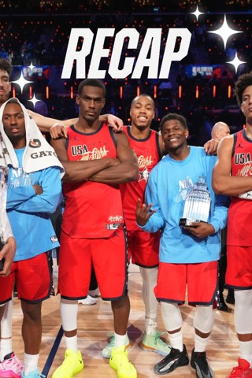new
LeBron Nets Triple-Double In Win Over Mavericks🔥
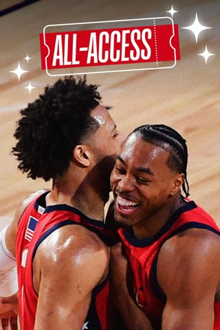new
Thursday's Thrilling Plays ⭐
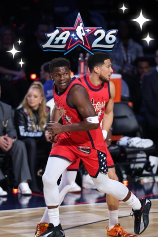new
LeBron Makes Triple-Double History 👑
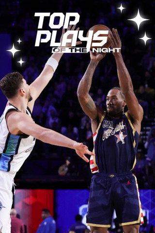new
Topić Makes NBA Debut After Cancer Diagnosis
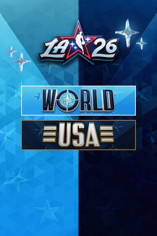new
MAVERICKS vs LAKERS FEB 12 HIGHLIGHTS
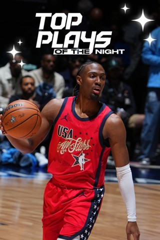new
2026 PlayStation NBA Creator Cup 🔥 Plays
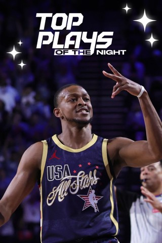new
Inside The 2026 PlayStation NBA Creator Cup 🏆
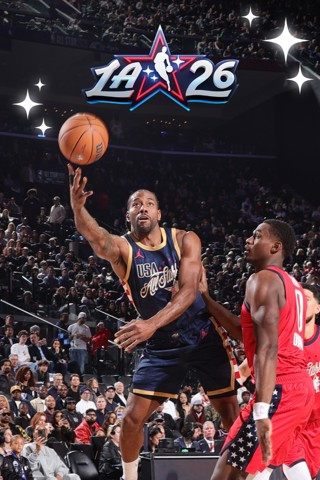new
Team Staples Wins 2026 PlayStation NBA Creator Cup 🏆
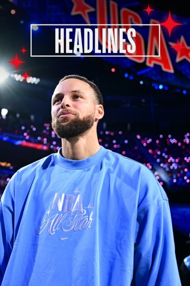new
2026 PlayStation NBA Creator Cup MVP 🏆
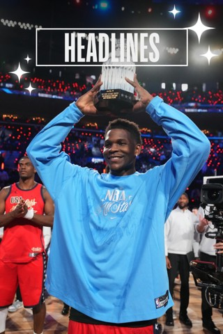new
TRAIL BLAZERS vs JAZZ FEB 12 HIGHLIGHTS
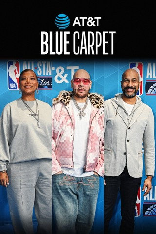new
BUCKS vs THUNDER FEB 12 HIGHLIGHTS
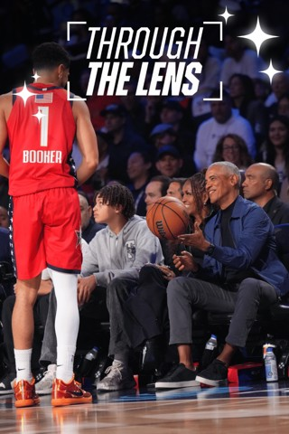new
Bucks Battle The Thunder In OKC 🦌⚡️
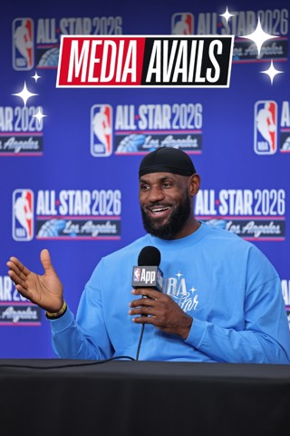new
Thursday's Recap
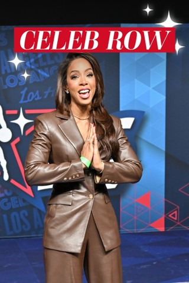new
Jazz, Pacers Fined For Detrimental Conduct
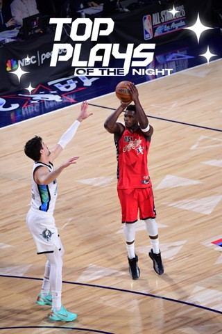new
All-Star Media Circuit Flicks 📸
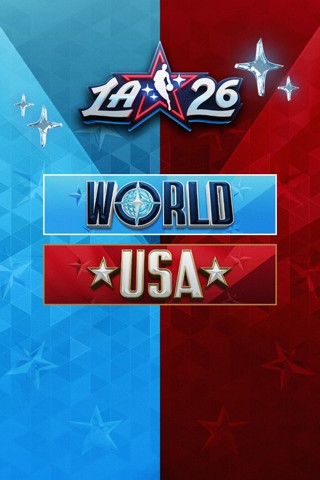new
Thunder's Williams (Hamstring) Out vs. Bucks
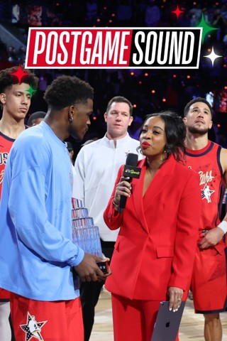new
Stars Are Out In L.A. 📍
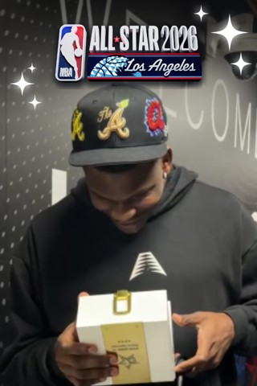new
BTS: All-Star Saturday Night Rehearsal 🏀
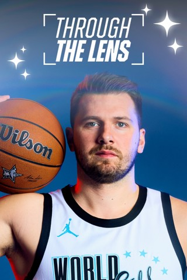new
Thursday's Top Photos 📷
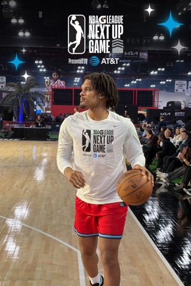new
Dunk Contest Jersey Tributes Over The Years 🔥
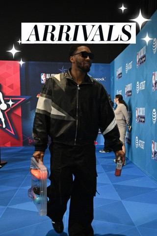new
History Of The Dunk Contest 🏆
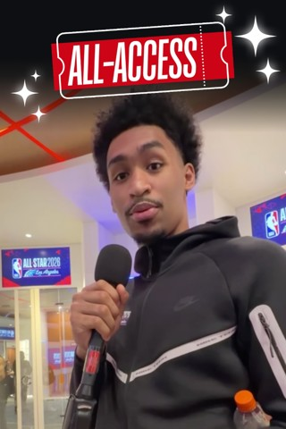new
LeBron's All-Star Moments Over The Years 🎥
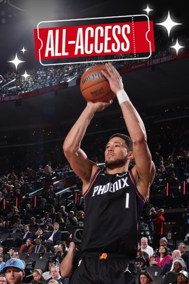new
Key Stats For The 2026 NBA All-Stars 👀
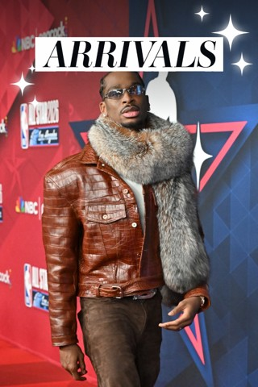new
Fox Replaces Giannis In 2026 All-Star Game
.jpeg) new
newBrooks Gets 1-Game Ban For 16 Techs
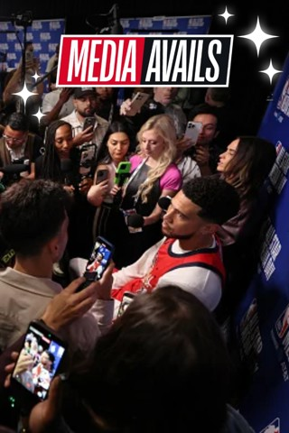new
Report: Jackson Jr. (Knee) Done For Season
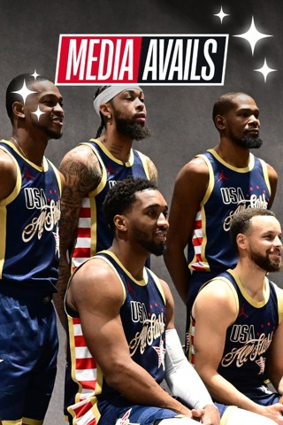new
Rising Stars: Bailey, Carrington Replace Injured Flagg, Sarr
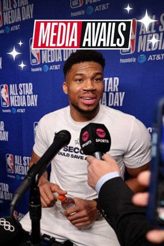new
Young Replaces McClung In Rising Stars
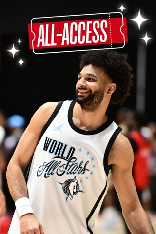new
The Athletic: Inside The World Of NBA Players' Personal Photographers
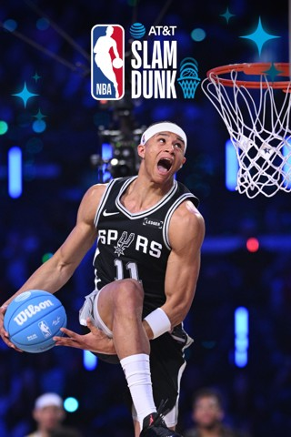new
Crowe Jr. Leaves His Mark On California Hoops Scene
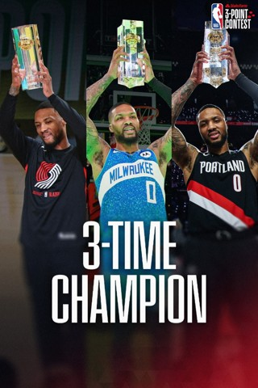new
Some Great Prop Dunks In Dunk Contest History
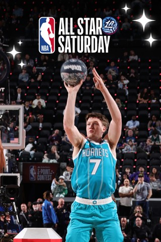new
Best 50-Point Dunk Contest Slams Part 3
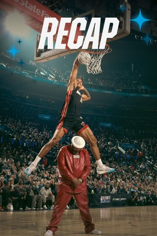new
Best 50-Point Dunk Contest Slams Part 4
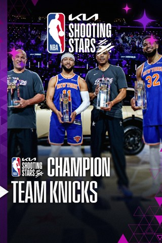new
Look Back At The Iconic 2016 Dunk Contest
.jpeg) new
newSummer League Returns To Las Vegas
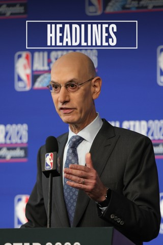new
The 'Best' Dunk Contest Ever, 10 Years Later
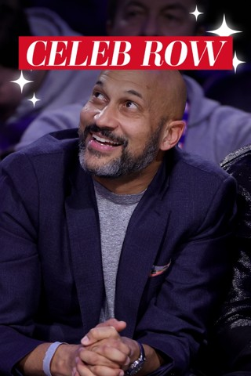new
AWS Inside The Game: Leverage Score
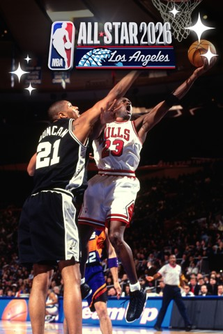new
Flagg (Foot Sprain) To Miss Rising Stars
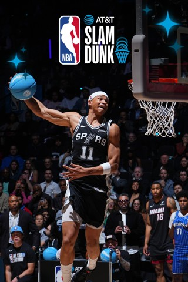new
Shape NBA All-Star With Your NBA ID 🗣️
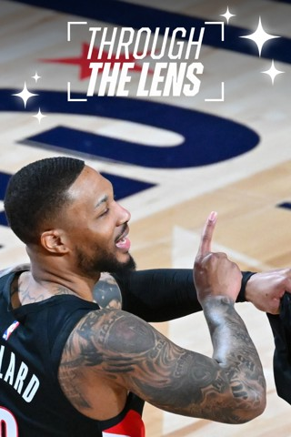new
Kia Rookie Ladder: Raynaud Joins The Top 5
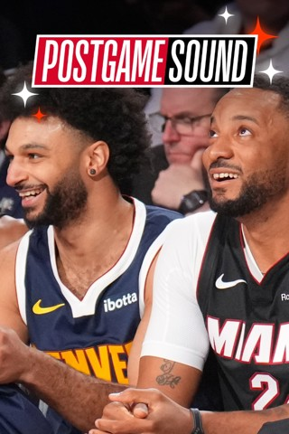new
NBA Suspends 4 Players From Pistons-Hornets Game
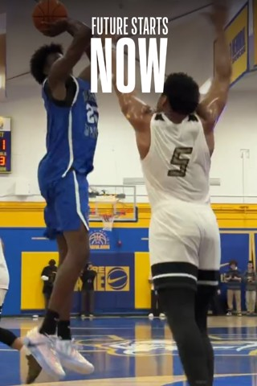new
The Athletic: Life advice from Durant's new CeraVe deal
new
3-Point Contestants By The Numbers👌
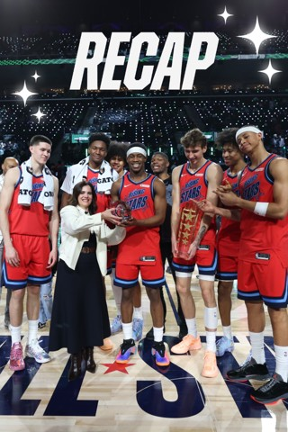new
All-Star 2026 Performers 🎤
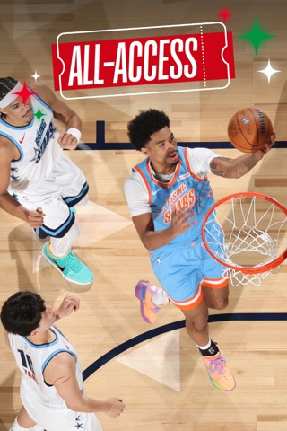new
Ludacris To Headline All-Star Entertainment Lineup
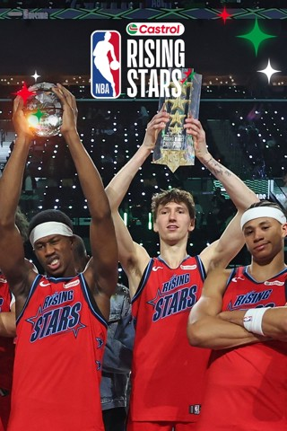new
The Athletic: Inside The Single 3-Pointer Club
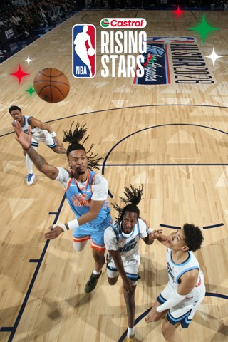new
Wemby's Out Of This World 👽
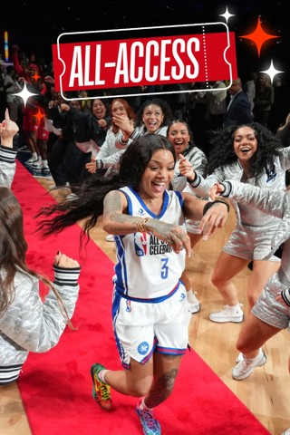new
Jalen Brunson's Massive 40 Piece 🔥
.jpeg) new
new2026 AT&T Slam Dunk Judges 🏀
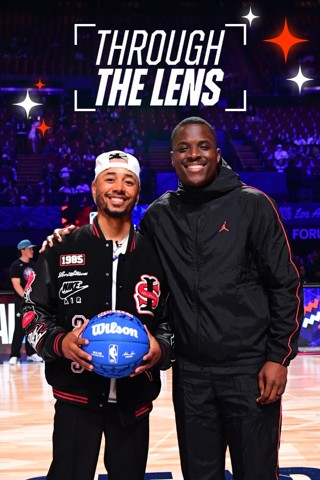new
A Look Back Into All-Star's Past ⏪
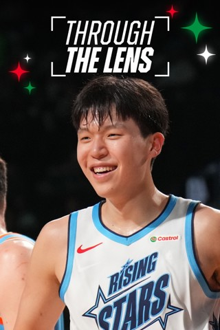new
Risacher Replaces Mitchell In Castrol Rising Stars
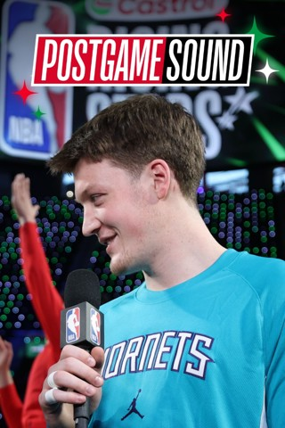new
Ingram Replaces Injured Curry for All-Star Game
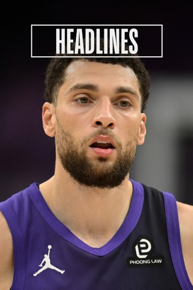new
Warriors' Curry (knee) Out For 2026 All-Star Game
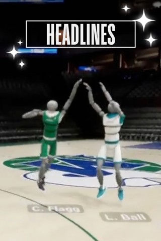new
Over 200 Global Creators Taking Part In All-Star 2026
new
NBA Creator Cup Teams 🔥
.jpeg) new
newNBA ID All-Star Challenge 2026
new
NBA, AmEx Expand & Extend Partnership
new
Topić Makes Debut With OKC's G League Squad
.jpeg) new
newThe Athletic: Henderson Back On The Court For Blazers
new
Knueppel Keeps Cooking In His Rookie Season 🐝
new
Camara Catches Fire From Deep, Sets Career Highs 🔥
new
Westbrook Joins 27K Point Club 🪣
new
Yuki Kawamura Is A Highlight Machine 🎞️
new
Every NBA All-Star Game Uniform And Logo Design
new
Tatum Practices With Maine Celtics
new
Former UNC Star White Thrilled To Be Traded Home
new
Pacers' Furphy Suffers Season-Ending Injury
.jpeg) new
newVeteran Butler Undergoes Surgery On Torn ACL
new
Make Your Impact 🌟
new
Power Rankings: Lay Of Land As All-Star Nears
new
Castle, Johnson Named Players Of The Week
new
Rosters Set For Basketball Without Borders All-Star Camp
new
The Athletic: Jaylen Brown: Celtics To Figure Out Chemistry After Vučević trade
new
The Athletic: How Do We Feel About The Knicks Going Into Final Stretch Of Season?
new
The Athletic: Tatum Progresses To 5-On-5 Workouts
new
Best Games To Watch - Week 17
new
Moussa's Motor: Diabaté Driving Hornets' Surge
new
NBA All-Star Saturday Is Set 🏀⭐
new
Knicks Visit Celtics In Boston 🏀
new
Cam Thomas Agrees To Sign With The Bucks
new
2026 State Farm 3-Point Contest Field Announced 🎯
new
Familiar Faces In New Places 📌
new
Jokić Passes Oscar In Career Triple-Doubles
.jpeg) new
newMcClung To Replace Jones Garcia In Rising Stars
new
Best 50-Point Dunk Contest Slams Part 2
new
2026 AT&T Slam Dunk Participants Announced 💥
new
2026 Kia Shooting Stars Participants Announced ⭐
new
Everything You Need To Know About Kia Shooting Stars ⭐
new
Hawks F Kuminga (Knee) Out Through All-Star Break
new
Dončić Leaves Lakers’ Game With Left Leg Injury
new
Every Number To Know After The Trade Deadline
new
Best 50-Point Dunk Contest Slams Part 1
new
PlayStation NBA Creator Cup Is Back 🌟
new
Trending Topics: All-Time USA And World All Stars
new
Kia MVP Ladder: Cunningham Races Into Top 5
.jpeg) new
newWhat To Know About 2026 NBA Creator Cup
new
Get Ready For All-Star Weekend 2026 ⭐
new
Austin Reaves Hasn't Lost A Step 🔥
new
All-Time Stat Leaders Tracker
.jpeg) new
new2026 Castrol Rising Stars Coaches
new
NBA All-Star 2026: Dates To Know ⭐
new
The Knicks' Cup Championship Celebration 🎉
 new
newNew All-Star Game Format 🏀
new
Top Dunk Scores of the 2025-26 Season 💥
new
Every Tissot Buzzer-Beater This Season 🔥
new
2025 Playoff Recap 🌟
new
2025 NBA Finals In Focus 📸
new
Best Photos From The Playoffs 📸
new
Global Reach Of NBA All-Star 2026
new
Standings Through Feb. 12 Games
Headlines
Live updates: NBA All-Star 2026 from L.A.
NBA All-Star FAQ, guide & things to know
2 stats to know about every 2026 All-Star
Fox replaces Giannis in 2026 All-Star Game
Topić debuts for Thunder after cancer diagnosis
Jazz, Pacers fined for detrimental conduct
Rising Stars: Bailey, Carrington replace injured Flagg, Sarr
Miami's Young replaces McClung in Rising Stars
Report: Jazz's Jackson Jr. (knee) done for season
Summer League returns to Las Vegas from July 9-19
TRENDING NOW


NBA LEAGUE PASS
STREAM ALL-STAR LIKE YOU’RE COURTSIDE
Don’t miss a second of the star-studded weekend or the rest of the season. Get League Pass at the new low price today.
ALL-STAR 2026 VIDEO


AROUND THE NBA


Headlines
Live updates: NBA All-Star 2026 from L.A.
NBA All-Star FAQ, guide & things to know
2 stats to know about every 2026 All-Star
Fox replaces Giannis in 2026 All-Star Game
Topić debuts for Thunder after cancer diagnosis
Jazz, Pacers fined for detrimental conduct
Rising Stars: Bailey, Carrington replace injured Flagg, Sarr
Miami's Young replaces McClung in Rising Stars
Report: Jazz's Jackson Jr. (knee) done for season
Summer League returns to Las Vegas from July 9-19
NBA APP

DON'T MISS AN ALL-STAR MOMENT.
Go behind the scenes in the Moments tab, keep up with real-time highlights, and vote to shape All-Star’s biggest moments.